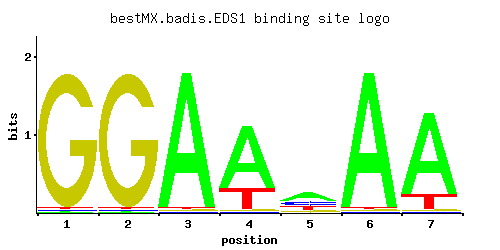

EDS1
YBR033W
Putative zinc cluster protein; YBR033W is not an essential gene
Best-performing DNA-binding model.

View and copy the recommended matrices ↘
A | 0.01 0.01 0.97 0.75 0.48 0.97 0.83 C | 0.01 0.01 0.01 0.01 0.24 0.01 0.01 G | 0.97 0.97 0.01 0.01 0.10 0.01 0.01 T | 0.01 0.01 0.01 0.24 0.19 0.01 0.15
A | 1 1 97 75 48 97 83 C | 1 1 1 1 24 1 1 G | 97 97 1 1 10 1 1 T | 1 1 1 24 19 1 15
A | -3.47 -3.47 1.11 0.85 0.41 1.11 0.95 C | -2.89 -2.89 -2.89 -2.89 0.29 -2.89 -2.89 G | 1.68 1.68 -2.89 -2.89 -0.59 -2.89 -2.89 T | -3.47 -3.47 -3.47 -0.29 -0.52 -3.47 -0.76
Alternative candidate matrices 1
Historical matrix candidates from the original ScerTF database. Expand a source to inspect its original logo, scores, and matrix values.
EDS1Foat et. al.P = 1View matrix ↘
Gene-level annotations and interactions.
Genes bound in ChIP-chip experiments 81 genes
YBL068W, YBL070C, YBR109C, YBR110W, YBR185C, YBR186W, YCL002C, YCL006C, YCL007C, YCL008C, YCL009C, YCL010C, YCR002C, YCR004C, YCR005C, YCR006C, YCR008W, YCR012W, YCR023C, YDL044C, YDL092W, YDL094C, YDL108W, YDL109C, YDR056C, YDR057W, YEL002C, YEL015W, YEL016C, YER060W, YER183C, YFR023W, YGL133W, YGR066C, YGR100W, YJL037W, YJL038C, YJR012C, YJR013W, YJR041C, YJR042W, YJR098C, YJR099W, YJR132W, YJR154W, YKL026C, YKL061W, YKL072W, YKL128C, YKL167C, YKL177W, YKL179C, YLL035W, YLL036C, YLL038C, YLR199C, YLR200W, YLR412W, YML065W, YML066C, YMR126C, YMR187C, YMR200W, YMR267W, YMR283C, YNL259C, YOR058C, YOR059C, YOR128C, YOR148C, YOR256C, YOR257W, YOR353C, YPL118W, YPL119C, YPL150W, YPL151C, YPL185W, YPL238C, YPL258C, YPR118W
Genes affected by TF deletion 1 genes
No Data
Predicted TF–TF partners 5 genes
DOT6, HSF1, RGT1, STB3, TOD6